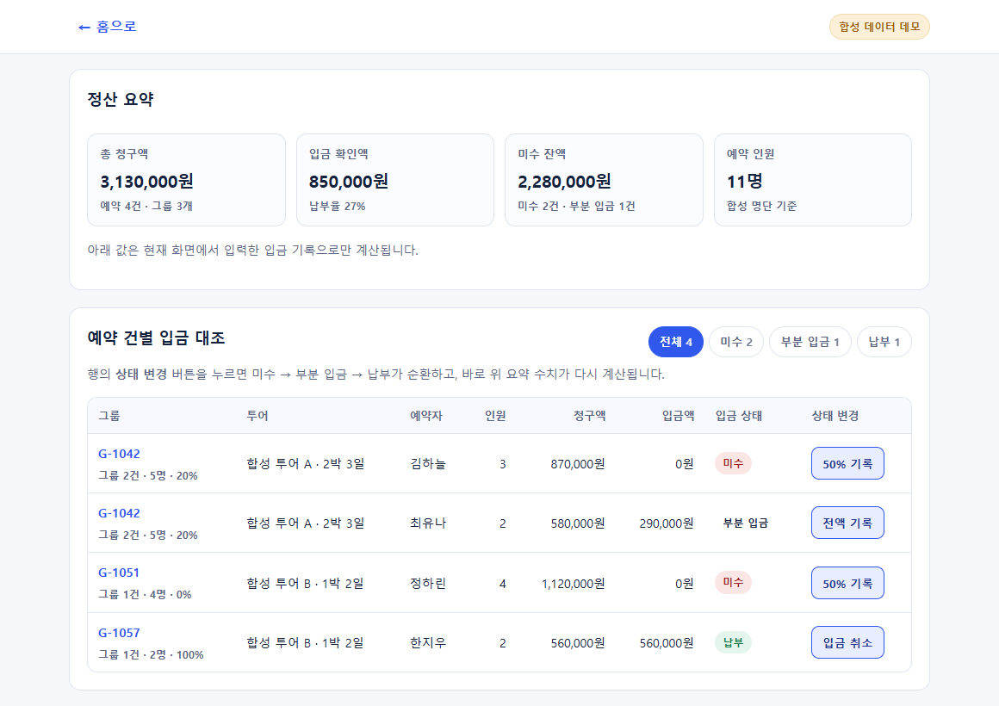
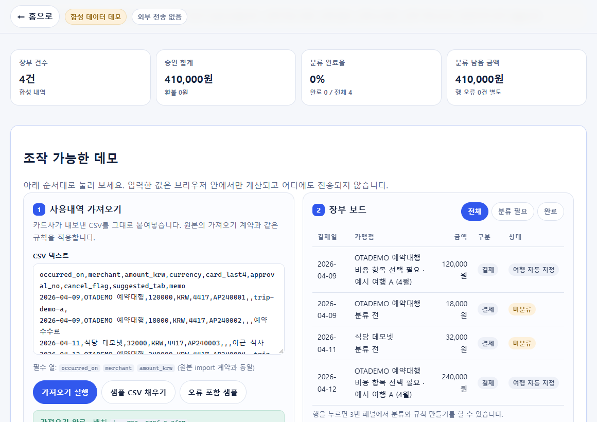
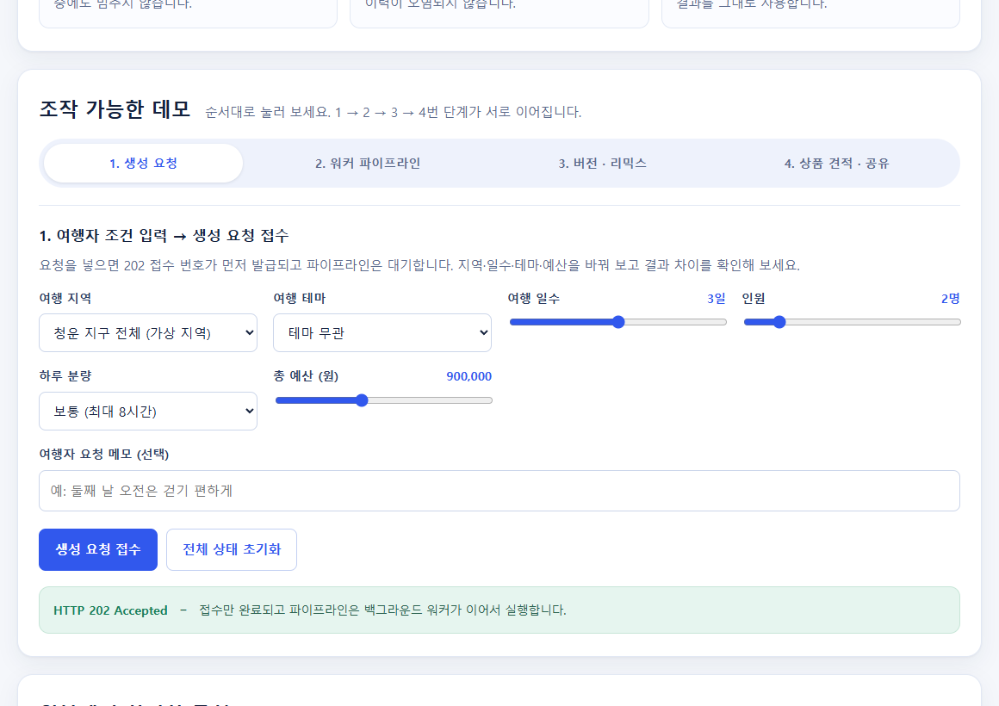

예약 · 입금 대조 · 명단
흩어진 예약 업무를,
하나의 흐름으로.
예약·입금·명단을 따로 확인하는 업무를, 상태 변경과 집계가 연결되는 흐름으로 보여드립니다.
6Soo / DEVELOPMENT PORTFOLIO
예약과 정산, 메시지 처리, AI 일정 설계까지.
업무의 흐름을 이해하고, 코드로 연결합니다.
SI 개발 · 업무 자동화 · AI 활용

입금 상태와 명단이 연결되는 흐름을 체험해 보세요직접 조작하는 데모
웹 · 자동화 · AI · 개발 도구
실제 발송·결제·고객 정보 연결 없음
SELECTED WORK / 01—03
세 가지 업무 흐름부터 살펴보세요.
화면을 보는 데서 한 걸음 더, 직접 조작할 수 있습니다.
예약 · 입금 대조 · 명단
예약·입금·명단을 따로 확인하는 업무를, 상태 변경과 집계가 연결되는 흐름으로 보여드립니다.

내역 수집 · 규칙 분류 · 예외 검토
반복되는 분류는 규칙으로 처리하고, 중복 입력과 규칙 충돌은 따로 확인합니다.

생성 요청 · 검증 · 버전 · 견적
조건 입력부터 일정 검증·수정·견적까지. 공개 데모는 실제 AI 호출 없이 동작합니다.
캡처는 합성 데이터를 사용하는 공개 데모의 실제 화면입니다. 기술 태그는 원본 프로젝트의 구성도 함께 보여줍니다. 공개 데모 자체는 HTML·CSS·JavaScript로 실행되며, 각 페이지에 원본 구현과의 차이를 표시했습니다.
PROJECT INDEX
HOW I THINK & BUILD
반복은 시스템이 처리하고,
중요한 판단은 사람이 할 수 있도록.
어디서 데이터가 들어오고, 어떤 규칙을 거쳐, 누가 결과를 확인하는지부터 정리합니다.
정상 처리뿐 아니라 중복·오류·권한을 다룹니다. 발송과 확정처럼 중요한 단계에는 검토를 남깁니다.
원본에서 확인한 기능과 공개 데모를 구분합니다. 연동 개선 사례와 신규 컨셉을 전체 제품 개발 성과로 소개하지 않습니다.
NEXT CONVERSATION
외주 개발 파트너나 함께 일할 개발자를 찾고 계신다면,
데모로 업무 흐름을, GitHub로 공개 프로젝트를 확인해 주세요.